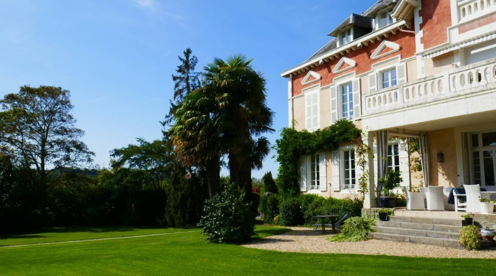

Domaine de Bassilour

Un lieu unique, champêtre et convivial
Lire sur le site officiel ↗
À Bidart, le parc du Manoir accueille la cérémonie et le cocktail, tandis que la Ferme rénovée reçoit la réception. Des chambres et des appartements permettent de séjourner dans le domaine.
Pendant votre visite
- Combien d’invités peuvent être assis à table en gardant de la place pour danser ?
- Où se déroulent la cérémonie et le cocktail s’il pleut ?
- Les chambres et l’heure de fin de soirée sont-elles écrites dans le contrat ?
Sources : Coordonnées officielles · Présentation des mariages